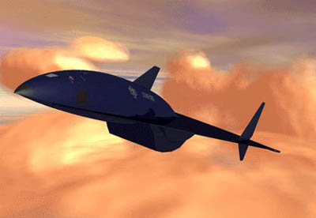

Area 51, also known as Groom Lake, is a secret military facility about 90 miles north of Las Vegas. The number refers to a 6-by-10-mile block of land, at the center of which is a large air base the government will not discuss. The site was selected in the mid-1950s for testing of the U-2 spyplane, due to its remoteness, proximity to existing facilities and presence of a dry lake bed for landings. Groom Lake is America's traditional testing ground for "black budget" aircraft before they are publicly acknowledged. The facility and surrounding areas are also associated with varying levels of credibility with UFO and conspiracy stories. In 1989, Bob Lazar claimed on a Las Vegas television station that he had worked with alien spacecraft at Papoose Lake, south of Area 51. Since then, "Area 51" has become a popular symbol for the alleged U.S. Government UFO cover-up.
Air Force Flight Test Center
Presumed Operator of Area 51
The Air Force Flight Test Center (AFFTC), headquartered at Edwards Air Force Base, is the presumed operator of the secret air base at Groom Lake (Area 51). This assumption is drawn because "AFFTC" appears on many documents regarding base security and land use, and known Groom Lake workers claim AFFTC credentials. AFFTC is a logical master because the Groom Lake base was founded for the testing of secret aircraft initially the U-2 and Edwards is responsible for that function. Groom Lake is Detachment 3 of AFFTC. Personnel often claim to have worked at Nellis Air Forcebase or "Pittman Station," a now-defunct post office in Henderson, Nevada.
From history we can assume that the original operators, the Central
Intelligence Agency (CIA) and Lockheed "Skunkworks", are probably still
operating at the base. Of course from there we could also assume that the
National Reconnaissance Office (NRO) also would be there to deal with the
images obtained by the classified spyplanes, one of the most well known
"The Aurora". Also add to the list the National Security Agency (NSA).
The CIA, NRO and the NSA would be the information retrieval and deciphering
units.
( This is the Aurora which is said to be built in Area 51)
